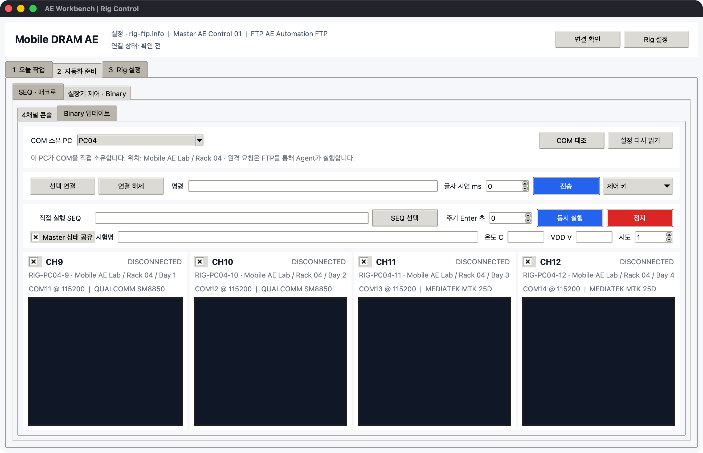
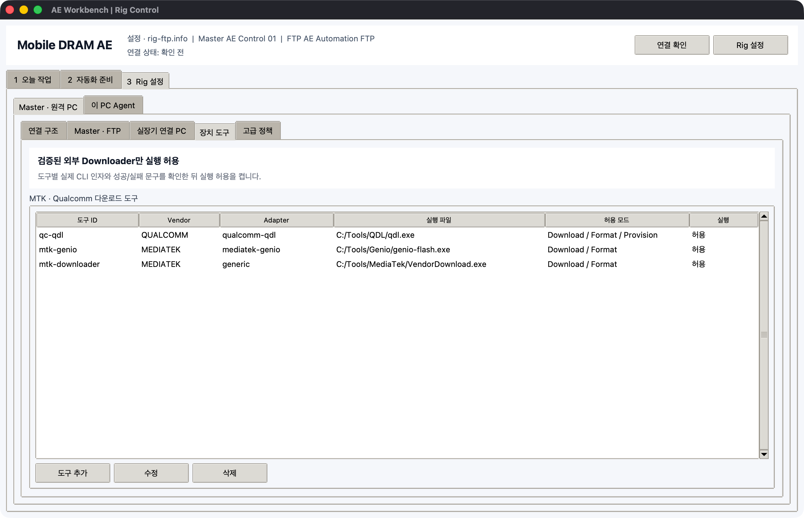
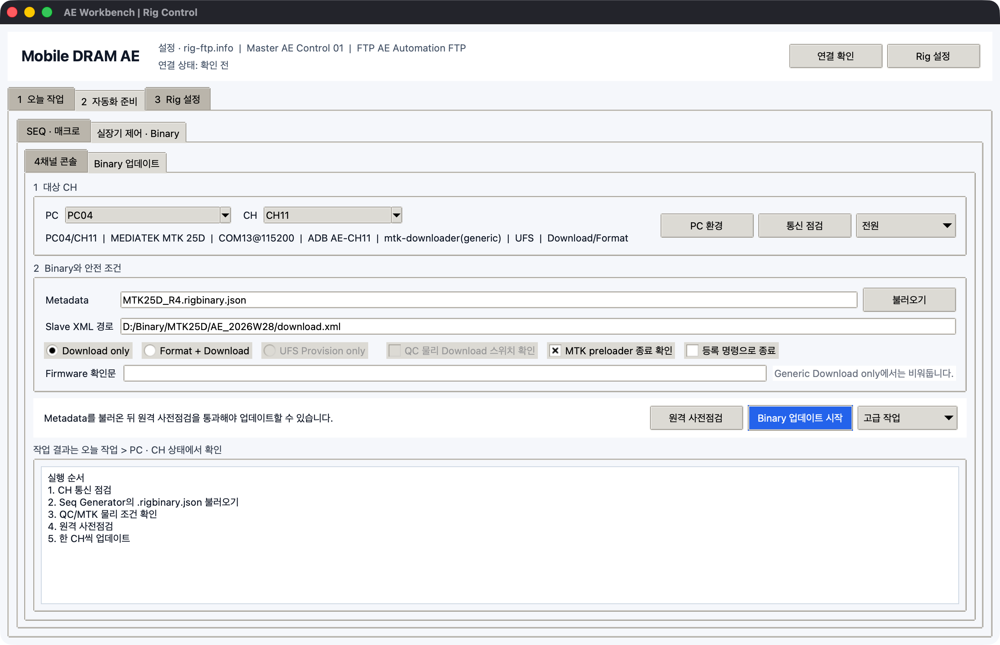

실장기 직접 제어와 Binary 업데이트
2 자동화 준비 > 실장기 제어 · Binary는 SK Commander 화면 매크로와 별개로
COM에 직접 연결하는 작업 영역입니다. 한 PC에 연결된 최대 4개 실장기를 동시에 보고,
검증된 외부 MTK/Qualcomm Downloader를 한 CH씩 실행합니다.
통신 구조
| 작업 | 실행 위치 | 통신 방식 |
|---|---|---|
| 실시간 4채널 콘솔 | COM이 실제 연결된 Slave PC | pyserial 지속 연결 |
| 같은 SEQ 동시 전송 | 해당 Slave PC | CH별 독립 thread와 COM |
| 전원·통신·Binary 요청 | Master에서 선택한 Slave로 제출 | FTP의 짧은 job 파일 |
| 결과 확인 | Master | FTP 결과·로그 새로고침 |
FTP는 실시간 터미널 스트림으로 사용하지 않습니다. Slave Agent는 poll할 때만 FTP에 접속하고, 콘솔 수신은 로컬 메모리에서 처리하므로 다른 FTP 사용자의 연결을 계속 점유하지 않습니다.
최초 CH 설정
3 Rig 설정 > Master · 원격 PC > 실장기 연결 PC를 엽니다.- PC를 선택하고
실장기 관리를 누릅니다. 실장기 식별탭에서 물리 실장기 ID, Model, Serial, 실제 위치와 자유 CH/Slot을 입력합니다.PC 연결탭에서 Console COM, baud, 예상 HWID와 USB Hub/Port를 입력합니다.- 필요하면
ADB 사용을 켜고 ADB serial, Download COM, USB 식별자와 전원 명령을 입력합니다. - MTK에서 실제로 검증한 명령이 있을 때만
preloader 종료 명령을 입력합니다.
CH 이름은 CH1로 고정되지 않습니다. CH9, CH11, QC-DL, PC04-RIG2를 그대로
사용할 수 있습니다. 한 PC의 Console COM은 서로 달라야 합니다.
4채널 콘솔

- 실장기 PC에서
AEWorkbench.exe를 실행합니다. - 상단 Node ID와 같은 PC를 선택합니다.
- 사용할 CH 체크를 켜고
선택 연결을 누릅니다. - 각 패널에서
COM @ baud, SoC와 현재 부팅 상태를 확인합니다. - 공통 명령을 입력하고
전송을 누릅니다.
COM 대조는 Windows가 현재 감지한 port, description, HWID와 USB location을 설정값과
비교합니다. 예상 HWID가 다른 COM에서 정확히 한 번만 발견될 때만 안전한 COM 변경 적용이
활성화됩니다. 여러 COM에 동시에 일치하거나 설정 COM이 다른 하드웨어이면 자동 변경하지
않습니다.
수동 콘솔, 직접 COM SEQ와 전원 명령은 실제 COM을 열기 직전에 같은 HWID 검사를 다시 수행합니다. 전체 식별 체계와 이동 절차는 PC · 실장기 · COM 연결 구조를 따릅니다.
입력칸은 출력 가능한 ASCII만 받습니다. ;, -, _, /, 0x는 사용할 수 있지만
한글과 제어 문자는 거부합니다. 제어 문자는 제어 키에서 보냅니다.
| 컨트롤 | 동작 |
|---|---|
Enter |
CH에 설정된 CRLF 전송 |
Ctrl+C 중단 문자 |
0x03 전송 |
Ctrl+V 제어 문자 (0x16) |
terminal control byte 0x16 전송 |
클립보드 ASCII 붙여넣기 |
검증된 ASCII를 명령 입력칸에 넣고 전송 전에 확인 |
exit 2회 |
150 ms 간격으로 exit와 Enter를 두 번 전송해 boot context 전환 |
글자 지연 ms |
불안정한 입력을 한 byte씩 지연 전송 |
주기 Enter 초 |
0이면 꺼짐, 양수이면 CH별 keepalive Enter |
수신 버퍼에서 최신 marker를 찾아 PRELOADER, BOOTLOADER, LK, OS CONSOLE,
OS LOGIN으로 표시합니다. 예를 들어 LK2]가 들어오면 LK가 표시됩니다. marker가
없어도 원문은 콘솔에 계속 남습니다. 메모리는 CH별 최대 약 256 KB, 화면은 최근 5,000줄로
제한되어 장시간 실행해도 무한히 커지지 않습니다.
SEQ 직접 실행
SEQ 선택에서 검증된.seq를 고릅니다.- 실행할 CH만 체크합니다.
- Master에서 함께 볼 시험이면
Master 상태 공유를 켭니다. - 시험명과 필요 시 온도, VDD, 시도를 입력합니다.
동시 실행을 누릅니다.- 각 Grid와 command의
PASS또는FAIL진행을 패널에서 확인합니다. - 중단이 필요하면
정지를 누릅니다.
Grid header #...는 로그 구간으로 사용하고, command는 ;로 나눕니다. 선택 CH는
서로 다른 thread에서 실행되므로 네 장치가 순서대로 기다리지 않습니다. 같은 COM을 다른
터미널이나 SK Commander가 열고 있으면 연결이 실패하므로 먼저 해당 COM을 닫아야 합니다.
현장 SEQ 규칙에 맞지 않는 cmd1; cmd2; 형태의 구분자 뒤 공백과 마지막 ; 누락은
전송 전에 차단합니다.
SEQ 실행 중에는 주기 Enter와 수동 명령이 자동으로 잠시 중지됩니다. 최근 TX/RX와 command
판정은 work_dir/serial-results/{job_id}/manifest.json, console.log, grids/*.log에
CH별로 저장됩니다. console 기본 상한은 8 MB, Grid log는 Grid당 2 MB·실행당 합계 32 MB이며
결과 JSON의 command 응답은 최근 4 KB를 포함합니다. 로컬 실행 폴더는 기본 최근 40개만
유지하고 Workbench manifest를 가진 전용 폴더만 정리합니다.
Master에서 직접 COM SEQ 배포

- Generator에서 검사한
*.rigseq.zip을 서버 라이브러리에 등록합니다. 1 오늘 작업 > 실행에서[SEQ]를 선택합니다.SEQ 방식을직접 COM으로 바꾸고Rig 대상 불러오기를 누릅니다.- 각 행의 CH, COM, baud, SEQ와 자재 값을 확인합니다.
- 제외할 CH의 첫 열 체크를 끄고
실행 시작을 누릅니다.
Master는 같은 Node, Campaign ID, attempt의 직접 COM 행을 한 job으로 묶습니다. Slave는 서로
다른 COM인지 다시 검사한 뒤 최대 4개 CH를 독립 thread에서 동시에 실행합니다. attempt 1과
attempt 2는 별도 묶음이므로 반복 순서는 유지됩니다. 행별 방식을 바꾸려면 해당 행을 선택한
뒤 상단 SEQ 방식을 바꾸거나 SEQ 방식 셀을 더블클릭합니다.
Slave는 Grid/command 진행을 heartbeat에 기록하고, 최종 CH별 manifest, Grid log와 console을
work_dir/serial-results/{job-CH}/에 저장합니다. 종료 시 용량 제한 증거 ZIP을 한 번만
FTP에 올리며 raw serial stream을 실시간 socket처럼 계속 전송하지 않습니다.
Downloader 도구 등록

3 Rig 설정 > Master · 원격 PC > 장치 도구에서 실제 회사 도구를 등록합니다.
- Vendor와
.exe경로를 정합니다. - 인자를 한 줄에 하나씩 입력합니다.
{xml},{port},{mode},{channel},{adb_serial}placeholder를 사용합니다.- 도구가 요구하는 Download/Format mode 값과 timeout을 입력합니다.
- 실제 버전의
--help또는 사내 문서를CLI 근거 문서에 기록합니다. - 성공 문구와 실패 문구를 각각 한 줄 이상 등록합니다.
- 현장 dry-run을 확인한 뒤에만
실제 실행 허용을 켭니다.
Workbench는 Qualcomm/MTK의 비공개 프로토콜을 추측해 구현하지 않습니다. 등록한 외부 Downloader를 실행하고, exit code·성공 문구·실패 문구와 전체 stdout/stderr를 검사합니다. 도구 버전이 바뀌면 실행 허용을 끄고 CLI와 결과 규칙을 다시 확인합니다.
Seq Generator 준비
Test Sequence Generator의 Provision 탭에서 다음 값을 설정합니다.
- Vendor, SoC, Binary root와 XML
- 대상 Slot/CH, Console COM과 baud
- 예상 USB/COM Download 식별자
- 여러 ADB 장치 중 하나를 고정하는 ADB serial
- Download 후 ADB online을 필수로 볼지 여부
- Downloader ID와 실제 경로
Build Preflight Plan이 READY인지 확인하고 Export Release Metadata로
*.rigbinary.json을 만듭니다. 파일에는 XML 경로와 SHA-256, 원본 폴더, COM/baud/ADB
힌트만 들어가며 proprietary binary 파일 자체는 복사하지 않습니다.
Binary 업데이트

- Master에서 대상 PC와 CH를 선택합니다.
PC 환경으로 Windows, PowerShell과 serial backend를 점검합니다.통신 점검으로 대상 COM과 ADB 상태를 확인합니다.*.rigbinary.json을 불러옵니다.- Slave에서 보이는 XML 경로를 확인합니다.
- Vendor의 물리 조건을 확인합니다.
원격 사전점검을 실행합니다.- 결과가 PASS일 때
Binary 업데이트 시작을 누릅니다.
Metadata Vendor/SoC와 CH 프로필이 다르면 제출 단계에서 차단됩니다. Slave에서는 다시 Downloader 경로, XML 존재, XML SHA-256, COM, USB Download 식별자, 허용 모드와 결과 규칙을 확인합니다.
Qualcomm
- 물리 Download/EDL 스위치를 실제로 누르거나 고정한 뒤 체크합니다.
- CH의 Download 식별자에는 현장에서 확인한 EDL 장치 문자열을 저장합니다.
- 여러 장치가 연결됐을 때 ADB 명령은 항상 CH의 serial을 사용합니다.
Format + Download는 해당 도구 프로필에서 명시적으로 허용한 경우만 가능합니다.
MediaTek
- 검증된 절차로 preloader를 종료한 뒤 확인 체크를 켭니다.
- CH에
preloader_exit명령이 검증되어 있으면등록 명령으로 종료를 사용할 수 있습니다. Format + Download는 도구 프로필 허용과 아래 확인문이 모두 필요합니다.
FORMAT rig-pc-04:CH11
확인문은 선택한 Node/CH와 정확히 같아야 합니다.
전원 제어
전원 > 켜기/끄기/다시 켜기는 CH 프로필의 power_on, power_off 명령을 Console
COM과 baud로 전송합니다. 명령이 비어 있으면 실행하지 않고 설정 오류를 반환합니다.
장비마다 명령이 다르므로 예제 POWER ON을 실제 근거 없이 그대로 사용하면 안 됩니다.
Slave 내보내기
Slave 설정 내보내기는 PC별 폴더에 두 파일을 만듭니다.
PC04/
rig-ftp.info
rig-commander.config.json
두 파일과 AEWorkbench.exe를 같은 폴더에 둡니다. rig-commander.config.json에는 해당
PC의 CH, COM, baud, ADB, 전원 명령과 Downloader 프로필이 들어갑니다. 설정을 바꿨으면
다시 내보내고 Slave 파일을 교체합니다.
중단 정책
- 콘솔의 직접 SEQ는
정지로 다음 command 전송을 막습니다. - FTP 긴급 중단은 대기 작업을 차단하고 실행 중 직접 COM 묶음이 다음 stop 확인 시 멈추게 합니다.
- 직접 COM 묶음에서 한 CH가 실패해도 다른 CH는 자체 결과를 확정하며, 작업 전체는 FAIL입니다.
- 외부 Downloader가 이미 실행된 Binary 작업은 강제 종료하지 않습니다.
- 업데이트 중 프로세스 강제 종료, USB 분리 또는 전원 OFF는 하지 않습니다.
- Binary 작업은 한 job에 한 CH만 허용합니다.
Windows 11 확인
PC 환경 또는 다음 명령은 OS build, x64/ARM64, PowerShell과 pyserial 포함 여부를
검사합니다.
RigCommander.exe device system-check
GitHub Actions는 windows-latest에서 GUI 생성, EXE 시작, device system-check와 전체
테스트를 실행합니다. 표준 GitHub runner는 사내 Windows 11 desktop/COM 하드웨어가
아니므로 최종 확인은 실제 로그인된 Windows 11 실장기 PC에서 한 CH dry-run으로 합니다.
공개 기술 기준
- Android 공식 ADB 문서: 여러 장치에서는
-s serial로 대상을 고정 - Qualcomm 공식 bring-up 문서: EDL/QDL과
05c6:9008장치 식별 예시 - MediaTek 공식 Genio Tools 문서: Windows 지원과 외부
genio-flash사용 방식 - Microsoft .NET 문서: Windows serial port API
공개 문서는 일반적인 경계를 정하는 근거입니다. 사내 SK Commander, YJ/실장기 wiring, Vendor Downloader 인자와 성공 문구는 현장 증거가 우선합니다.